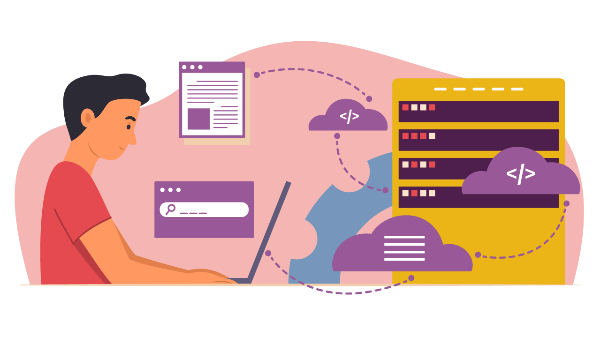

Módulo 5 . Aula 5
Software livre e REAs
Módulo 5 . Aula 5
Software livre e REAs
 Objetivos da
aula
Objetivos da
aula
Nesta aula você conhecerá os conceitos fundamentais do Software Livre, sua trajetória histórica, os principais tipos de licenças e sua relação com a emancipação social e a Educação Aberta, destacando sua importância para a democratização do conhecimento e a autonomia tecnológica.
Ao final desta aula você deverá ser capaz de:
- Compreender os conceitos e as principais características do Software Livre.
- Analisar a história do Movimento Software Livre, reconhecendo seus principais marcos, ideias e impactos sociais e tecnológicos.
- Diferenciar licenças permissivas, licenças recíprocas totais e licenças recíprocas parciais.
- Avaliar criticamente o papel do Software Livre na emancipação do indivíduo e na promoção da Educação Aberta.
Conceito e características

No cenário contemporâneo, caracterizado pela crescente ubiquidade das tecnologias digitais na vida cotidiana da sociedade, surge a necessidade de uma reflexão crítica acerca dos softwares adotados.
Essa análise torna-se fundamental para avaliar os impactos dessas ferramentas em oportunidades de desenvolvimento e inserção social, bem como em dinâmicas de poder que podem incidir sobre um paradigma de inclusão ou exclusão digital.
À medida que a escolha de softwares permeia diversas esferas da sociedade, desde instituições educacionais até órgãos governamentais, torna-se primordial compreender como essas decisões podem moldar as trajetórias individuais e coletivas, influenciando as relações sociais e a equidade no acesso ao universo digital.
A análise crítica dos softwares adotados em contextos educacionais não deve restringir-se somente às suas características técnicas, uma vez que também exige um olhar crítico sobre as dimensões sociais, políticas e econômicas que estruturam e condicionam o uso dessas tecnologias.
Essa perspectiva implica examinar como determinadas escolhas podem ampliar ou limitar oportunidades de aprendizagem, potencializando processos de formação ou, inversamente, reproduzindo mecanismos de exclusão e assimetrias de poder no interior das instituições educativas.
Segundo Pretto (2012), a adoção de tecnologias abertas e colaborativas (Software Livre) constitui uma opção ética e política, associada à defesa de autonomia, de transparência e de participação democrática. Assim, a implementação de softwares livres ultrapassa uma decisão meramente operacional/técnica ao fortalecer a soberania tecnológica e ampliar as possibilidades de que sujeitos e comunidades adaptem e recontextualizem soluções segundo suas necessidades. Desse modo, a avaliação criteriosa das tecnologias empregadas assume papel estratégico na promoção de uma inclusão digital mais efetiva e na mitigação das desigualdades que podem ser reforçadas por escolhas tecnológicas não problematizadas.
Silveira (2004) descreve em seu artigo, intitulado “Inclusão digital, software livre e globalização contra-hegemônica”, que foi a partir da indignação de um integrante do MIT, Richard Stallman, contra a proibição de se acessar o código-fonte de um software, certamente desenvolvido a partir do conhecimento acumulado de tantos outros programadores. Em 1983, Richard Stallman informa nos grupos de usuários “net.unix-wizards” e “net.usoft”, que estava desenvolvendo um sistema um similar ao UNIX chamado GNU (um acrônimo para Gnu is Not Unix) e que ele seria disponibilizado livremente a todos os interessados. Assim, inicia-se o movimento software livre.
Práticas Educacionais Abertas incluem:
No vídeo a seguir, Richard Stallman apresenta o conceito e características do Software Livre. Assista!
O uso de software livre desempenha papel essencial na sociedade contemporânea, promovendo a democratização do acesso à tecnologia e estimulando a colaboração aberta. Ao optar por soluções de código aberto, as comunidades podem reduzir a dependência de empresas privadas e garantir maior transparência, uma vez que o código-fonte está disponível para inspeção/auditoria pública. Cabe ressaltar que isso contribui para a segurança cibernética, permitindo que especialistas identifiquem e corrijam vulnerabilidades rapidamente. Ademais, o software livre facilita a customização e a adaptação conforme as necessidades locais (por exemplo: idioma e regionalização), impulsionando a inovação e a flexibilidade em setores como educação, governo e organizações sem fins lucrativos.
Para fechar este tópico, vale ressaltar que a filosofia por trás do software livre também pode promover inclusão digital, proporcionando a comunidades e países em desenvolvimento a oportunidade de participar ativamente do desenvolvimento tecnológico. O acesso gratuito ao conhecimento e às ferramentas de software impulsiona a criação de uma sociedade mais equitativa, pois as barreiras financeiras para a entrada no mundo digital são reduzidas. Além disso, ao escolher soluções de código aberto, as organizações podem economizar recursos financeiros, investindo em desenvolvimento local e contribuindo para a criação de um ecossistema tecnológico mais sustentável e acessível para todos.
O livro A catedral e o bazar, de Eric S. Raymond, é uma obra seminal que analisa os modelos de desenvolvimento de software livre e de código aberto. Raymond contrapõe dois paradigmas: o modelo da “catedral”, centralizado e controlado, e o do “bazar”, colaborativo e aberto. A partir da experiência com o projeto Fetchmail, o autor demonstra como a abertura do código e a participação coletiva favorecem a inovação, a qualidade e a rapidez no desenvolvimento. A obra tornou-se referência para compreender a filosofia e as práticas do movimento do software livre.
- Você pode ler através deste link (em inglês - ative o tradutor do google em seu navegador)
Educação Aberta: contexto
Iniciaremos este tópico com uma citação de Lévy (1999) para reflexão.
"[..] na perspectiva da cibercultura assim como das abordagens mais clássicas, as políticas voluntaristas de luta contra as desigualdades e a exclusão devem visar o ganho em autonomia das pessoas e grupos envolvidos. Devem, em contrapartida, evitar o surgimento de novas dependências provocadas pelo consumo de informações ou de serviços de comunicação concebidos e produzidos em uma ótica puramente comercial ou imperial e que têm como efeito, muitas vezes, desqualificar os saberes e as competências tradicionais dos grupos sociais e das regiões desfavorecidas."
(Lévy, 1999, p. 238)
Em 1984, era impossível usar um computador moderno sem instalar um sistema operacional privativo, que você teria que obter sob uma licença restritiva. Ninguém tinha permissão para compartilhar softwares livremente com outros usuários de computador, e dificilmente alguém poderia mudar o software para atender às suas próprias necessidades (Stallman, 1999).
pan_tool_alt Navegue pela linha do tempo a seguir e conheça os principais marcos do movimento software livre
Descrição da linha do tempo:
Página contendo uma linha do tempo interativa sobre a história do movimento do software livre. A timeline apresenta eventos importantes organizados cronologicamente, desde a década de 1980 até os anos recentes.
O primeiro marco destacado é o anúncio do Projeto GNU em 1983 por Richard Stallman, iniciativa voltada à criação de um sistema operacional totalmente livre. Em 1985 ocorre a publicação do Manifesto GNU e a criação da Free Software Foundation, organização dedicada à promoção e defesa do software livre.
A linha do tempo apresenta também a definição formal de software livre em 1986, baseada em quatro liberdades fundamentais: executar o programa para qualquer propósito, estudar como ele funciona e adaptá-lo, redistribuir cópias e compartilhar versões modificadas.
Entre os eventos seguintes estão o lançamento da licença GNU GPL em 1989, que garante juridicamente essas liberdades, e a expansão internacional do movimento nos anos 1990 e 2000, com iniciativas como o diretório de software livre e a criação da Free Software Foundation Europa.
A timeline inclui ainda campanhas e avanços relacionados aos direitos digitais, como a campanha contra restrições digitais (DRM), a publicação da licença GPL versão 3 em 2007 e a criação da licença AGPL voltada para softwares executados em rede.
Nos anos mais recentes, são apresentados marcos relacionados ao desenvolvimento de hardware livre, certificações de dispositivos que respeitam a liberdade do usuário e iniciativas de proteção à privacidade digital, como guias de criptografia para comunicação segura.
O conteúdo destaca como o movimento do software livre evoluiu ao longo do tempo, articulando tecnologia, liberdade de uso, colaboração e acesso aberto ao conhecimento.
No próximo tópico vamos conhecer os tipos de licenças utilizadas.
Licenças
As licenças, geralmente, podem ser categorizadas em três segmentos, classificados de acordo com a presença de termos que estabelecem restrições no licenciamento durante a redistribuição ou criação de trabalhos derivados do original. Nesse sentido, as licenças são classificadas como permissivas ou recíprocas, sendo estas últimas subdivididas em parciais ou totais. A distinção principal reside no fato de que as licenças recíprocas totais preservam integralmente os termos da licença original, enquanto as recíprocas parciais também são conhecidas como copyleft fraco (Sabino, 2011).
Licenças permissivas
No caso das licenças permissivas, não são colocadas grandes restrições ao licenciamento de trabalhos derivados, estes podendo, inclusive, ser distribuídos sob uma licença fechada.
Primeira licença de software livre, criada originalmente para o Berkeley Software Distribution, um sistema derivado do UNIX.
Similar à Licença BSD. Também pode ser conhecida em algumas variantes como Licenças MIT/X11, pois foi criada para disponibilizar o gerenciador de janelas X11 desenvolvido pelo MIT.
Licença criada pela Apache Software Foundation, por meio da qual esta disponibiliza todos seus projetos. Estão incluídos: Apache HTTP Server, Apache Hadoop, Apache Tomcat e Apache Ant, dentre outros.
Licenças recíprocas totais
As licenças recíprocas totais — também conhecidas como copyleft — determinam que qualquer trabalho derivado do original deve ser redistribuído e disponibilizado sob os mesmos termos da licença original.
Principal licença de software livre recíproca total. Teve sua primeira versão redigida em 1989. A versão 2.0 foi redigida em 1991 e permaneceu até 2007, quando foi lançada a GPLv3, em vigência até os dias atuais.
Desenvolvida pela Affero Inc. como uma derivação autorizada da licença GPL com o intuito de permitir o uso de um software através de uma rede. Também pode ser conhecida como GNU Affero General Public License.
Licenças recíprocas parciais
Estabelecem que modificações feitas em um software sob essa licença sejam disponibilizadas sob a mesma licença. No entanto, uma distinção importante surge quando essas modificações são incorporadas como componentes em outro projeto de software. Nesse caso, o projeto resultante não é estritamente obrigado a ser disponibilizado sob a mesma licença. Essa flexibilidade representa a principal diferença entre as licenças recíprocas parciais e as totais, conferindo maior liberdade em relação às condições de licenciamento quando as modificações são integradas em novos contextos de desenvolvimento de software.
Redigida como uma cópia da licença GPL com alterações relativas a bibliotecas, definidas como um conjunto de funções de software que podem ser agregadas para formar novos softwares. Em 2007, a LGPL foi reescrita para ficar em conformidade com a GPLv3.
Determina que o código sob essa licença deve ser redistribuído pelos termos dessa mesma licença. Entretanto, o código pode ser utilizado em projetos maiores, que podem estar sob outra licença.
Criada para substituir duas licenças anteriores à criação da fundação: a IBM Public Licence de 1999, que foi posteriormente substituída pela Common Public Licence.
Como escolher uma licença de software livre? Observe a seguir um fluxograma para auxiliar o processo de escolha da licença a ser empregada ao software livre.
")
Software Livre, Emancipação e Educação Aberta
O uso de software livre na educação transcende a dimensão técnica e assume papel essencial na formação crítica e emancipatória de estudantes, professores e comunidades. Ao garantir o direito de acessar, estudar, modificar e redistribuir o código-fonte, o software livre oferece mais do que ferramentas gratuitas; ele propõe uma nova forma de pensar a tecnologia como bem comum e como meio de autonomia.
Quando o estudante tem liberdade para compreender o funcionamento das ferramentas que utiliza, ele desenvolve competências de leitura e autoria digital, participando ativamente do processo de produção de conhecimento e não apenas de sua recepção. Essa relação ativa transforma a aprendizagem em um ato de construção e de liberdade, podendo, assim, se aproximar dos ideais de uma educação emancipadora.
Além de favorecer a autonomia do estudante, o software livre se articula diretamente com a implementação de REA (Recursos Educacionais Abertos) e com a educação aberta enquanto políticas e práticas. Quando os ambientes virtuais de aprendizagem, os editores de conteúdo, os repositórios ou os sistemas de gestão são construídos ou adaptados com código livre, as instituições ganham autonomia institucional para modificar, contextualizar, traduzir e distribuir os recursos sem depender de licenças proprietárias ou de fornecedores que restrinjam essas práticas. Isso significa que os educadores, alunos e comunidades podem adaptar os recursos (conteúdos, atividades, interfaces) ao seu contexto cultural, linguístico ou socioeconômico, fortalecendo assim a relevância local do material e promovendo inclusão. Essa abordagem fortalece a equidade no acesso à educação, pois reduz barreiras econômicas, tecnológicas e de dependência.
Ferramentas livres, como o Moodle, o H5P, o Etherpad, o GIMP e o LibreOffice, permitem que os processos pedagógicos ocorram em ambientes que respeitam a liberdade de uso e promovem a autossuficiência tecnológica (Santana; Rossini; Pretto, 2012).
Do ponto de vista da emancipação do estudante e de comunidades educacionais, o software livre também representa um ato político e ético em defesa da soberania digital e da inclusão. Ao reduzir dependências de plataformas proprietárias, escolas e universidades públicas (ou não) ampliam sua capacidade de gerir dados, personalizar ambientes e investir em soluções colaborativas de baixo custo. Essa independência tecnológica favorece a inovação pedagógica e fortalece o compromisso social das instituições de ensino com a democratização do conhecimento. Assim, a combinação entre software livre e educação aberta pode criar um ecossistema que promove não apenas a partilha de conteúdos, mas sobretudo a formação de sujeitos críticos, capazes de compreender e transformar a realidade em que vivem (Pretto, 2012).
Clique aqui e conheça os principais softwares livres para contextos educacionais.
Cada software livre listado pode ser integrado a estratégias de aprendizagem ativa, produção colaborativa de REA e ensino híbrido, reforçando a autonomia docente e discente. A combinação entre ferramentas livres e licenças abertas constitui a base tecnológica e ética da educação aberta e da emancipação digital.
Chegamos ao final desta aula. Nela foram apresentados os conceitos essenciais do Software Livre, sua trajetória histórica e os diferentes tipos de licenças existentes. Ao longo do percurso destacou-se a importância do Movimento Software Livre para democratização do conhecimento, autonomia tecnológica e promoção de Educação Aberta, reforçando seu papel na emancipação do indivíduo e no desenvolvimento de práticas sociais, educativas e tecnológicas mais livres e colaborativas.
Na próxima aula abordaremos como encontrar, usar e compartilhar REA.
Como citar esta aula:
PIMENTEL, Mariano; CARVALHO, Felipe. Inteligência Artificial Generativa na Educação Aberta: potencialidades e riscos. Programa de Formação Modular em Ciência Aberta. Módulo 5. Educação Aberta e Recursos Educacionais Abertos Aula 5. 1. ed. Rio de Janeiro: Fiocruz, 2025. Disponível em: https://mooc.campusvirtual.fiocruz.br/rea/ciencia-aberta-2ed/modulo5/aula5.html.